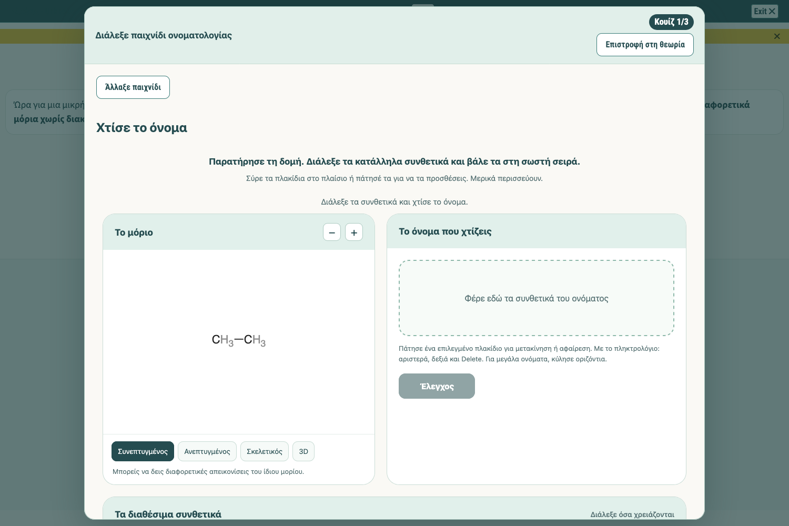
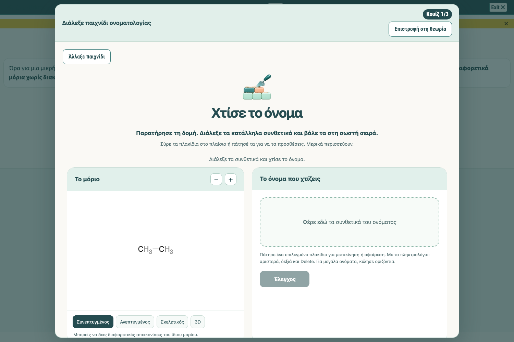
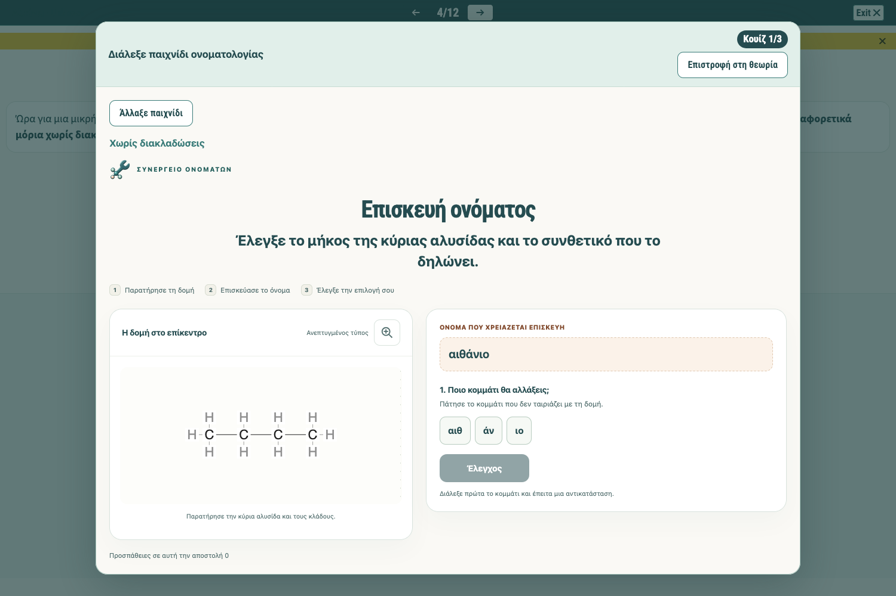

1. Builder πριν
Μικρός τίτλος 24 px, αριστερά, χωρίς λογότυπο.

Μεγάλη προβολήΜΑΘΗΜΑ ΑΛΚΑΝΙΩΝ
Τρεις πραγματικές λήψεις Firefox στο ίδιο μέγεθος παραθύρου, 1500 × 1000. Πάτησε μια εικόνα ή το «Μεγάλη προβολή» για να τη δεις σε πλήρες μέγεθος.
Μικρός τίτλος 24 px, αριστερά, χωρίς λογότυπο.

Μεγάλη προβολήΚεντραρισμένο λογότυπο 88 px και μεγάλος τίτλος 40 px.

Μεγάλη προβολήΗ υπάρχουσα κεφαλίδα του Συνεργείου ως οπτική αναφορά.

Μεγάλη προβολήΣτη στάση 4 επίλεξε «Χτίσε το όνομα». Η νέα κεφαλίδα εμφανίζεται και στη στάση 11 και στις επαναληπτικές τριάδες.
Το «πριν» προέρχεται από τα αποθηκευμένα αρχικά αρχεία. Οι ερωτήσεις παράγονται τυχαία. Η σύγκριση εστιάζει στην κεφαλίδα, στο λογότυπο και στη διάταξη.